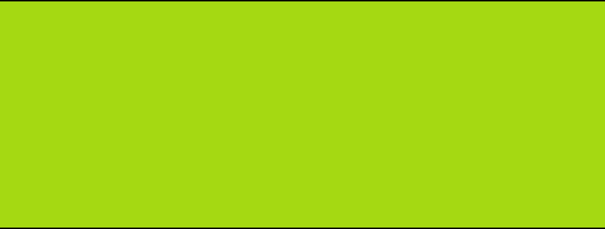

ГАРНИТУРА
ПОДДЕРЖИВАЕТ

| ЛАТИНИЦУ | what's the weather like today? | |
| КИРИЛИЦУ | какая сегодня погода? | |
| ГРЕЧЕСКИЙ | πώς είναι ο καιρός σήμερα; | |
| ТАЙСКИЙ | สภาพอากาศเป็นอย่างไร | |
| Деванагари | आज का मौसम कैसा है? | |
| Арабский | ما هو الطقس اليوم؟ |